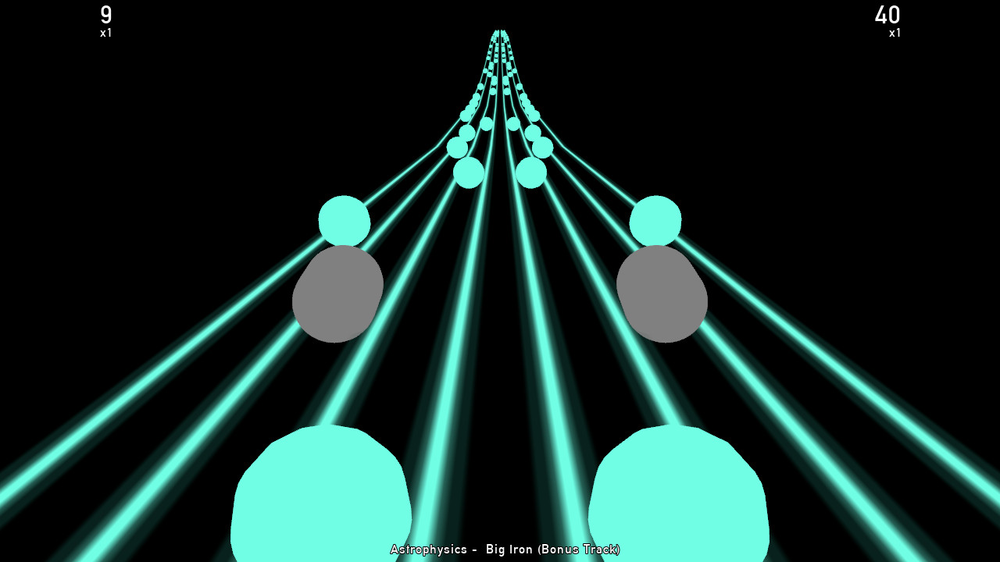

rileyweb | games

AutoRhythm
A simple "clone" of 2009 rhythm-puzzle game Audiosurf, made as part of my A-Level coursework.
Download here.
A simple "clone" of 2009 rhythm-puzzle game Audiosurf, made as part of my A-Level coursework.
Download here.